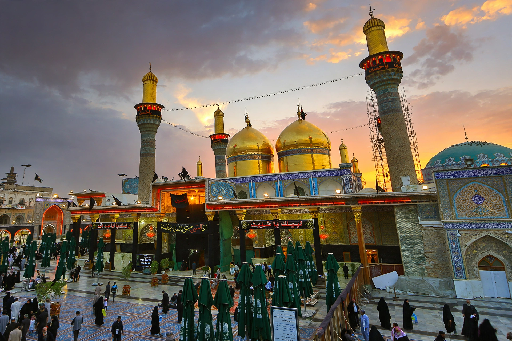

Karbala (Arabic: كربلاء) is a city in central Iraq, about 100 km southwest of Baghdad. It is one of the holiest cities in Shia Islam, the site of the Battle of Karbala in 680 CE, where Husayn ibn Ali, grandson of the Prophet Muhammad, was killed.

| Karbala | |
|---|---|
| Country | Iraq |
| Governorate | Karbala |
| Population | ~700,000 (estimate) |
| Known for | Imam Husayn Shrine, Al-Abbas Shrine |
On 10 Muharram 61 AH (10 October 680), Husayn and his small party were killed by the forces of the Umayyad caliph Yazid I. The event is commemorated annually during Ashura and the Arba'in pilgrimage, which draws tens of millions of pilgrims to Husayn's shrine — among the largest gatherings in the world.
Karbala grew around the shrines of Husayn and his half-brother Abbas. It was attacked by Wahhabis in 1802 and was a centre of the 1991 Shia uprising against Saddam Hussein, after which parts were destroyed. Today pilgrimage dominates its economy.